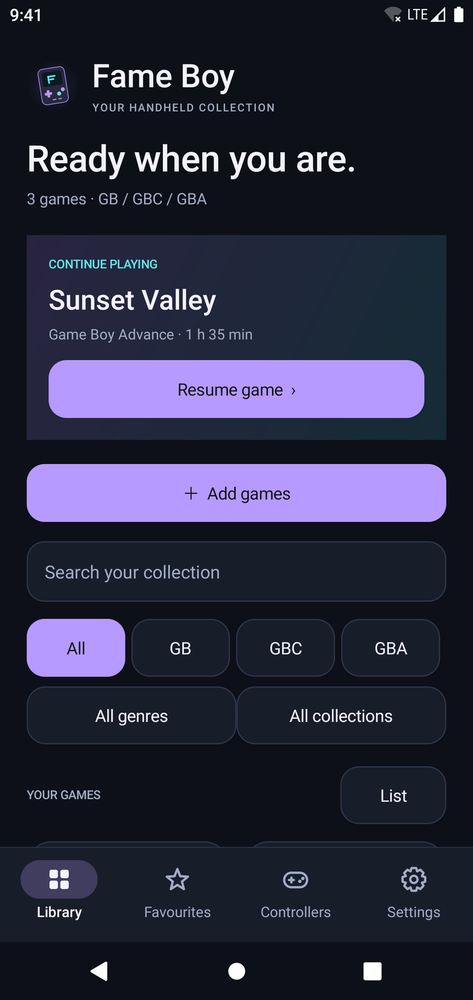
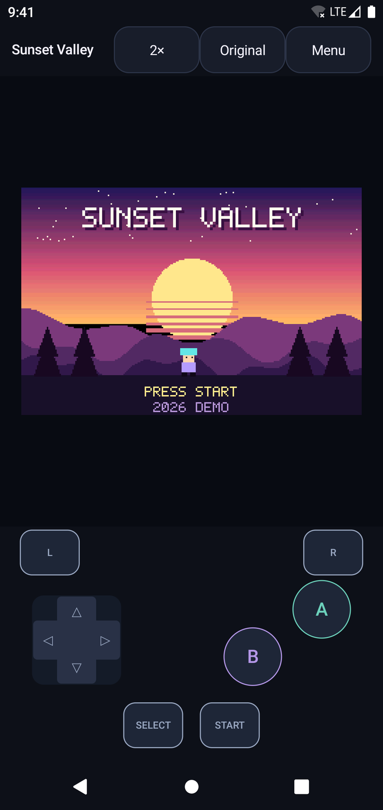
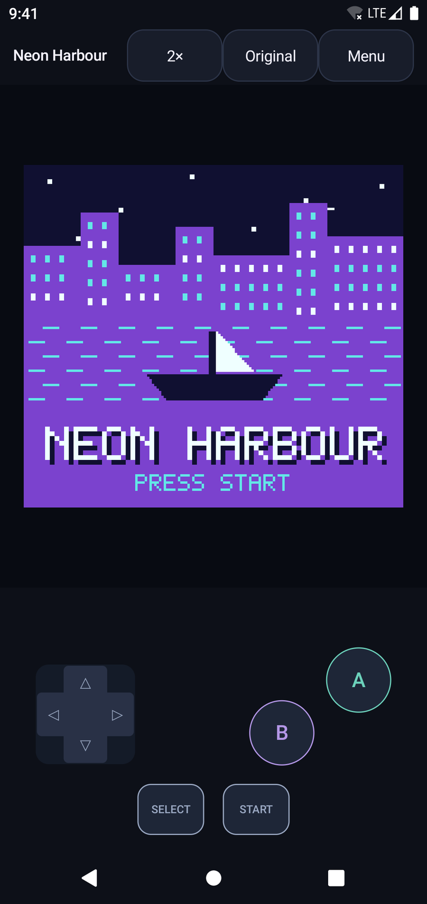
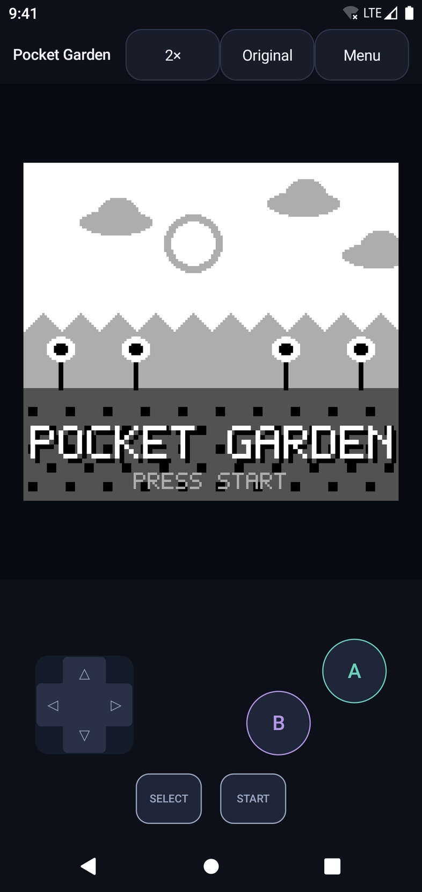
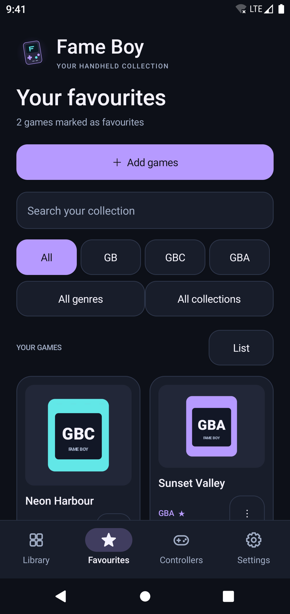
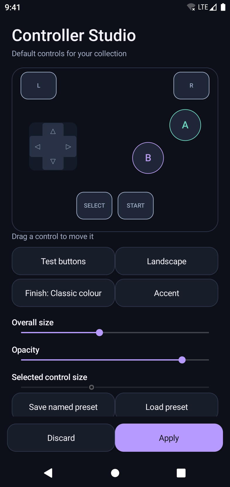
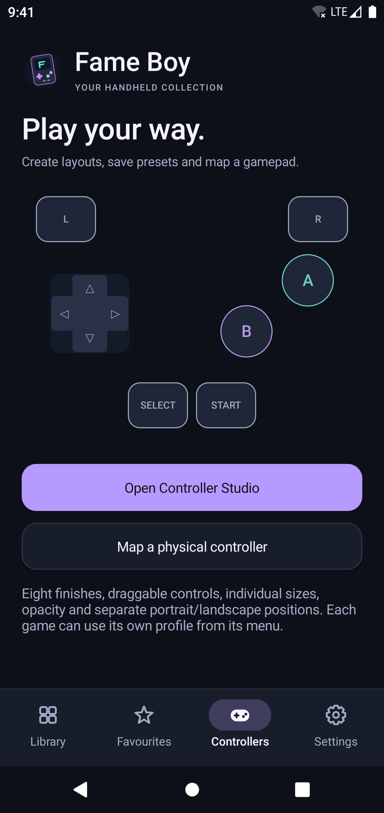
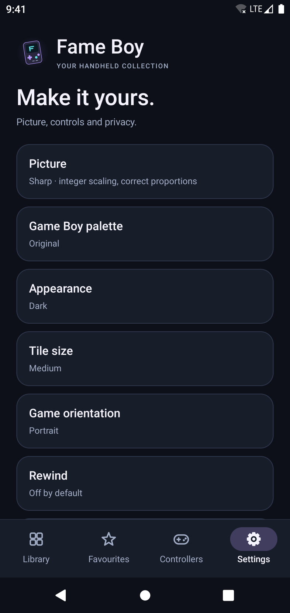
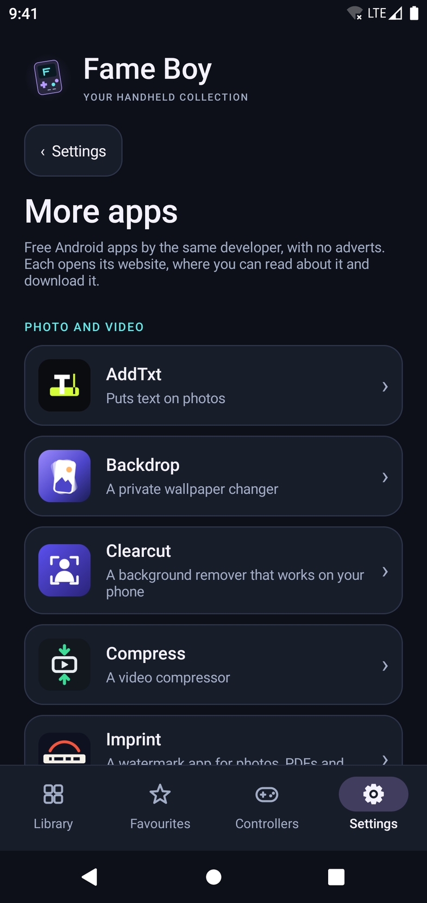
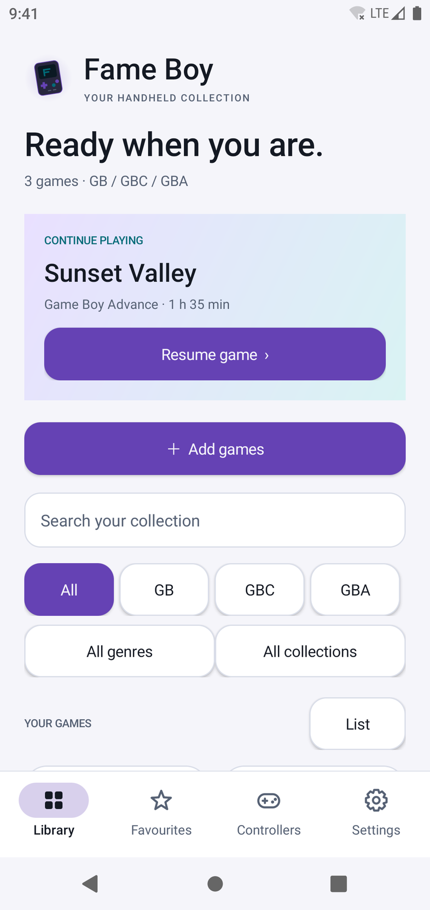

Your handheld classics, on your phone. Nothing else.
Fame Boy plays the Game Boy, Game Boy Color and Game Boy Advance game files you own. The picture stays sharp and the right shape, with no stretching or blurring unless you ask for it. Nine save slots and automatic saves sit alongside each game's own save, so progress is never lost.
Make the touch controls your own in Controller Studio, play with a gamepad or keyboard, rewind a mistake, add cheats and patches, and keep everything in a backup only you can open. No games come with it, there are no adverts, and your games and saves never leave your phone.
Fame Boy plays game files you supply. No games come with it. What the law says
- Version 1.0.2
- Android 10 or later
- 1.9 MB
Free, with nothing to unlock. No adverts, no account with the developer, no tracking. Compare or read the release notes.
Chrome may say the file might be harmful. It shows this for app files that do not come from Google Play. Choose Download anyway.

- No advertsNone in the app and none on this site.
- Nothing to buyRewind, cheats, saves and backups are all free.
- Stays on your phoneNo account, no tracking, no uploads.
- No games includedBring your own game files.
A look inside
These are the real screens, captured from the app on an Android 10 phone profile. The three games are original demo cartridges made for these pictures. Swipe or scroll sideways to see them all.









How it works
Fame Boy runs the games on your phone with mGBA, a well-known open-source engine. It never needs the internet to play.
Add your games
Choose game files or ZIP and 7z archives, or scan a folder. Fame Boy checks each file by what is inside it, skips duplicates and keeps a private copy, so your originals stay untouched.
Play
Tap a game. Menu pauses it. The game's own save is kept every ten seconds and whenever you pause, three automatic saves rotate as you go, and nine slots are yours to fill.
Make it yours
Pick Sharp, Smooth or Original picture, a palette, rewind length and your controls. None of it changes the game or your saves.
Everything is in, and all of it is free
Nothing below is held back for a paid tier, because there is no paid tier.
The picture
- Sharp by default
- Even pixels at the largest whole size that fits, at the right shape. No stretching, no cropping.
- Smooth or Original
- Smooth filters the picture; Original shows it unfiltered at the right shape. One tap brings Original back during play.
- Palettes for Game Boy games
- Original, classic green, greyscale, amber or blue.
- Portrait or landscape
- Automatic, or locked to the way you hold the phone.
Saves and progress
- The game's own save
- Written every ten seconds while you play and whenever you pause, kept separate from save states.
- Nine slots and three automatic saves
- With the date and time on each. A game reopens where its last automatic save left off.
- Rewind
- Off until you switch it on: 10, 30 or 60 seconds, held to 32 MB of memory. Hold the rewind button to go back.
- Play time
- Each game records how long you have played it.
Controls
- Controller Studio
- Drag any control, resize it, set opacity and accent colour, with eight finishes and separate portrait and landscape layouts.
- Presets and per-game controls
- Save named layouts and give any game its own.
- Gamepads and keyboards
- Map every button on a Bluetooth or USB gamepad. Unplug it and the touch controls come straight back.
- Hold for 2×
- Fast-forward only while you hold the button.
Your collection
- Search, filters and favourites
- Game Boy, Color and Advance filters, editable genres, your own collections, tiles or a list.
- Offline game matching
- 6,321 catalogue entries suggest a genre for each game, all on the phone. Uncertain matches stay as Other until you choose.
- Cheats and patches
- GameShark, Game Genie and Action Replay codes, and IPS, UPS and BPS patches, which are added as a separate game so the original and its saves stay as they were.
- Covers
- Choose your own picture, or switch on optional cover downloads.
Private and safe
- Backups only you can open
- Saves only, or everything. Seal the file with a password using AES-256. Restoring adds what is missing and never overwrites your progress.
- App lock
- An optional PIN, with fingerprint where your phone supports it.
- Linked files
- Keep games in your own folder and play them from there, checked before every play.
- Large text
- Every screen still works at twice the normal text size.
Your games stay yours
Nothing leaves your phone
Games, saves, play time and settings stay in Fame Boy's private storage. There is no account and nothing is uploaded.
Online only when you ask
Cover downloads are off until you switch them on, and Check for updates only runs when you tap it.
No tracking of any kind
No adverts, analytics or crash reports, and no access to your contacts, camera, microphone or location.
Use it within the law
Fame Boy is for game files you have the right to use, such as games you made, free homebrew games shared by their makers, or copies you are allowed to make. It comes with no games and no console software.
- Copyright, Designs and Patents Act 1988. Copying a game, or downloading or sharing a copy that someone else made, without the copyright owner's permission can infringe copyright (section 16). Making, selling or distributing copies of games without permission can also be a criminal offence (section 107). Only add games you have the right to use.
Laws differ in other countries. If you are not in the UK, the rules where you are apply. Read the terms of use.
Installing and updating
Fame Boy is not on Google Play, so your phone asks a couple of extra questions the first time.
Download the app file
Tap Download on your phone. The file is called FameBoy.apk and is about 1.9 MB. If Chrome says the file might be harmful, choose Download anyway. First tick the box to say you will use the app within the law.
Allow the install
Open the file. The first time, Android asks you to allow your browser to install apps. Allow it, go back and tap Install. If Google Play Protect steps in, choose More details, then Install anyway.
Updating later
In Fame Boy, Settings, Check for updates asks GitHub for the newest version, only when you tap Check now. Download opens in your browser: install the new file over the old one and your games, saves and settings are kept.
Version 1.0.2, released 26 November 2026. See the release notes, or check your download.
Questions
Is Fame Boy really free?
Yes. There is no paid version, no subscription and no adverts. Rewind, cheats, save slots, backups and Controller Studio are all there from the start.
Does it come with any games?
No. Fame Boy comes with no games and no console software. You add game files you have the right to use.
Which games does it play?
Game Boy, Game Boy Color and Game Boy Advance game files (.gb, .gbc and .gba, plus .agb, .sgb, .bin and .rom files that really are one of those), and ZIP or 7z archives holding them. Game Boy Advance SP and Micro games use the same files. It does not play DS or 3DS games.
Is it on Google Play?
No. Fame Boy is a personal project and is downloaded from this site as an Android app file. It needs Android 10 or later.
Does it need the internet?
No. Adding games, playing, saving, matching genres and backups all work with no signal. Only optional cover downloads and Check for updates go online, and only when you ask.
Will my saves work if I move phones?
Yes. Settings, Backup and restore, then export a full backup or saves only. Restore it on the new phone. A saves-only backup needs the same game files added again.
Can I use a controller?
Yes. Bluetooth and USB gamepads and keyboards work, and Controllers, Map a physical controller lets you set every button. Touch controls hide while a gamepad is in use.
Why does the picture have black borders?
Sharp keeps every pixel the same size, so it uses the largest whole size that fits your screen. Choose Smooth or Original in Settings, Picture to fill more of it.
Is it made by Nintendo?
No. Fame Boy is an independent app. It is not made, endorsed or sponsored by Nintendo. Game Boy, Game Boy Color and Game Boy Advance are Nintendo's trademarks and are named only to say which game files Fame Boy plays.
Does it work on an iPhone?
No. Fame Boy is for Android phones and tablets only.
Who made it?
Fame Boy is made by Jonathan Jackson, an independent developer in the United Kingdom.
Pick up where you left off
Free, with no adverts and nothing to unlock. Made by the developer of several other free Android apps: see them all.